DisponibilizaHorariosDisponiveis
UMLActivity
MatchMaker
::
DisponibilizaHorariosDisponiveis
Description
none
Diagrams

DisponibilizaHorariosDisponíveis
Nodes
InitialNode1
Chama o método DisponibilizaHorariosDisponiveis
Cria um novo objeto do tipo Proprietario
Consulta o banco de dados
Popula o objeto Proprietario
Consulta no banco de dados os horários especificos de acordo com a data especificada
retorna da função um json com todos os horários disponíveis
ActivityFinalNode1
Edges
(InitialNode1→Chama o método DisponibilizaHorariosDisponiveis)
(Chama o método DisponibilizaHorariosDisponiveis→Cria um novo objeto do tipo Proprietario)
(Cria um novo objeto do tipo Proprietario→Consulta o banco de dados)
(Consulta o banco de dados→Popula o objeto Proprietario)
(Popula o objeto Proprietario→Consulta no banco de dados os horários especificos de acordo com a data especificada)
(Consulta no banco de dados os horários especificos de acordo com a data especificada→retorna da função um json com todos os horários disponíveis)
(retorna da função um json com todos os horários disponíveis→ActivityFinalNode1)
Properties
Name
Value
name
DisponibilizaHorariosDisponiveis
stereotype
null
visibility
public
isReentrant
true
isReadOnly
false
isSingleExecution
false
Owned Elements
DisponibilizaHorariosDisponíveis